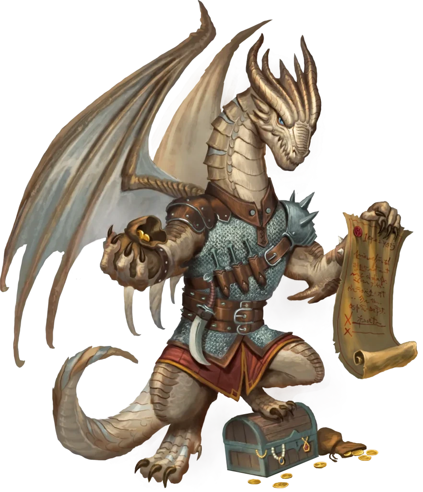

|
巨龙是强横非凡的存在，无论血统或年龄如何，都能在战场上建立赫赫战功。然而其中有一类巨龙截然不同――它们不仅善于战斗，更是为战而生。这些战龙精通百般武艺与各类兵法战事，无论是单打独斗的决战，还是动辄数万大军交锋的宏大战役皆能游刃有余。每一条战龙体内都潜藏着无穷无尽的未开发潜能……而当一场强大的仪式将这份潜能彻底释放时，又会发生什么？ 你是一条佣兵龙，出身于一脉将自身高超战力出租给他人以换取丰厚报酬的世系。你属于战龙家族的一员。你的关联伤害类型为力场，且你的吐息武器为 15 尺锥状，需进行敏捷豁免。 巨龙特质属性值提升。你的力量或智力值提升 2 点。 年龄。任何年龄段的巨龙都可以举行永恒之光仪式，因此哪怕是一条刚完成仪式的初生永光龙，严格来说也可能已经活了数千岁。不过，仪式澎湃的魔法能量会洗去衰老的痕迹。从仪式中苏醒的初生永光龙洋溢着青春活力与无限潜能。尽管部分学者持不同看法，但只要不死于暴力或其他灾祸，永光龙的寿命与传统派巨龙同样漫长。 阵营。永光龙的龙族血统会强烈影响其信念，但影响程度远不如同血统的传统派巨龙。例如，银永光龙往往是善良的捍卫者，而黑永光龙则往往狡诈刻薄。然而，永光龙深知龙脉并非不可违逆的宿命。任何永光龙都可以完全抛弃先祖的旧习，去开拓属于自己的道路。 体型。除非一条永光龙将自身魔力专注于增大体型（许多永光龙都会这样做），否则它们的体型并不会比常见的类人种族更大。你的体型可在小型或中型之间自选。 速度。你的基础步行速度为 30 尺。 黑暗视觉。你同样具备传统派巨龙的敏锐感官。在距离你 60 尺范围内，你可以将微光光照视作明亮光照，将黑暗视作微光光照。你在黑暗中无法分辨颜色，只能看到灰度的影像。 龙之馈赠。你从巨龙职业所列的龙之馈赠中获得一项龙之馈赠。如果某项馈赠具有先决条件，你必须满足其先决条件才能获得它。 龙类。你的生物种类为龙类，而非类人生物。 天生武器。除常规的徒手打击外，你还获得两种天生武器攻击：啃咬攻击与爪击攻击。你的啃咬攻击造成 1d6 点穿刺伤害；你的爪击攻击造成 1d4 点挥砍伤害。 你必须至少有一只手空闲才能发动爪击攻击。 你在进行爪击攻击的攻击检定和伤害掷骰时可以使用敏捷代替力量，但啃咬攻击不适用。 语言。你能够说、读、写通用语和龙语。 契约学识。你具有历史技能的熟练项。此外，你进行与契约及其他法律文书相关的智力（历史）检定时具有优势。 额外语言。你能够说、读、写一门你自选的额外语言。 永光佣兵龙背景设定佣兵龙是一群颇为有趣的生灵――它们热衷于通过向他人提供服务、靠辛勤劳作来赚取自己的宝库。遗憾的是，它们往往视忠诚如无物，只要时机合适，随时都会把自己卖给出价最高的买主。归根结底，对于许多最年长、最玩世不恭的传统派佣兵龙而言，它们所追求的早已不再是单纯的金钱报酬，而是立约者的灵魂。 不止一条佣兵龙――无论是永光龙还是传统派――曾向我解释说，当财富积累到一定地步，寻常珍宝便再也无法满足它们的欲望；于是其中意志薄弱之辈便会转向禁忌交易，只为追逐高风险契约条款带来的极致刺激，以及占有灵魂这等无价之宝所彰显的尊崇地位。然而，这种说法将市面上一切关于灵魂契约的传说全都推给了“一小撮意志薄弱的佣兵龙”，而我对所收集数据的分析却推翻了这一论调。在我看来，绝大多数远古佣兵龙与太古佣兵龙，至少都对收集灵魂怀有几分兴趣。 不过，这一统计规律基本只适用于传统派。永恒之光仪式似乎能够平息对灵魂的此类渴求，因此有些佣兵龙会在成年期将尽之时主动举行仪式，唯恐自己日后年岁渐长便会沦陷于这种执念。当然，世事无绝对，没有任何人能保证仪式一定能扭转乾坤。或许这些巨龙原本就绝不会染指灵魂收集，正因意志足够坚定才会为了防患于未然而举行永恒之光仪式；但有时候，哪怕经历了仪式，也依然不足以遏制那股好奇心在心底悄然滋长。 谈及灵魂，无论是传统派还是永光佣兵龙，都对永恒之光仪式有着一番颇为独到的理解与诠释。它们将这场仪式描绘成一纸与“未来的自己”缔结的契约：当下的巨龙从自己未来必将修成的伟大强横之魂中汲取力量，而这反过来又令当下的巨龙变得更加强大，进而促使未来的自己成长得愈发强盛，由此形成一个永无止境的正向循环。它们的这一理解多半切中了肯綮；永恒之光仪式构造极为繁复，而分析已证实其中确实包含时间魔法与扭曲现实等要素。 在与传统派和永光佣兵龙都打过交道的冒险者中，许多人指出永光佣兵龙要好理解、好沟通得多，因为它们性情更为“随和”，也更契合寻常短寿类人生物的思维方式、期望与诉求。反观传统派佣兵龙，身上则总带着一股近乎傲慢或超然物外的疏离感……至少在它们流露真性情时如此，毕竟为了促成交易，它们也足够精明，懂得在必要时摆出一副谦卑殷勤的面孔。正因如此，永光佣兵龙往往比寻常传统派佣兵龙更受欢迎，揽活接单也更为顺遂――当然，知情者心里清楚永光佣兵龙暗地里觊觎雇主灵魂的可能性要低得多，这或许也占了一部分原因。有幸招募到永光佣兵龙的冒险小队常常会发现，在谈判酬劳与悬赏时，这位同伴简直不可或缺。 脱身条款偶尔，永恒之光仪式还能通过精心设计的法律漏洞，为佣兵龙提供一条独特的途径来解除契约、免于收割立约者的灵魂。传说中曾有这样的佣兵龙：为了饶过立约者的灵魂，它们在契约期满之际举行永恒之光仪式――由于仪式之后的它们在法理上已被视作“另一条巨龙”，契约便随之自然“解除”。这类故事有的以悲剧收场：立约者在佣兵龙最虚弱的时刻当场背叛；而另一些故事则要温情得多：巨龙对自己在相处中产生真挚情谊（无论是知己之交还是爱侣之情）的立约者立下誓言，自此永世相伴效劳。 延伸阅读：对应怪物图鉴：佣兵龙 ・ 主书通用巨龙种族特质 ・ 巨龙职业 ・ 本卷新增龙之馈赠 |
 佣兵龙（Mercenary Dragon） |